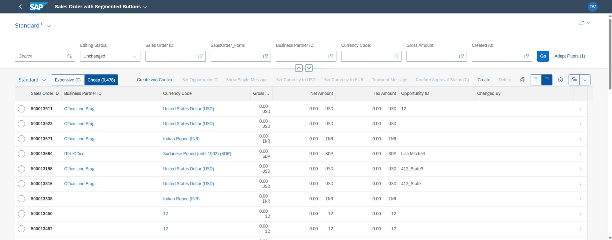
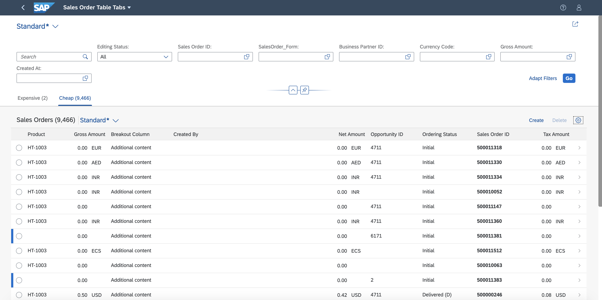
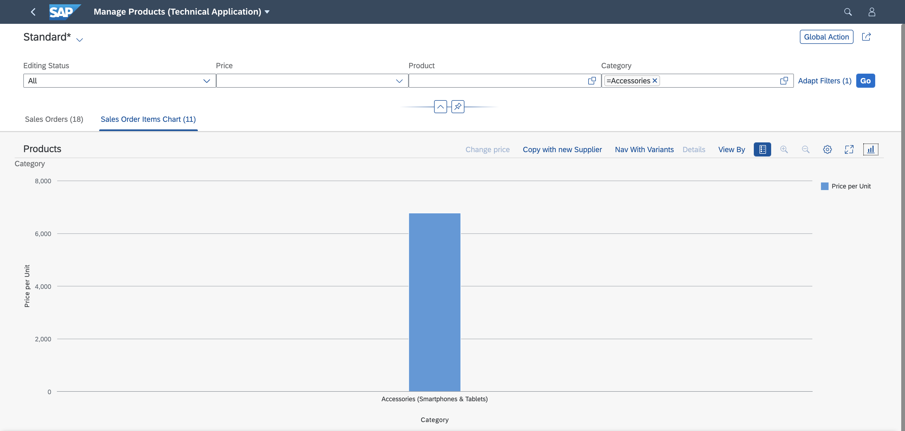

Multiple Views on List Report Tables
We've removed videos showing step-by-step procedures using SAP Web IDE, which SAP no longer actively supports. You can still access the video using an older version of this document.
You can define variants for specific selections of data on the user interface, for example, based on filter settings. In the definition dialog, these variants are called views, however, the feature is called variant management. Therefore, for clarity, we use the term variant management in this section.
You have the following options:
-
A single table for all views ("single table mode"): The UI contains a single table instance, one table toolbar, and (if activated) one table variant management. To switch between the views, a segmented button is rendered in the table toolbar. If there are more than three views, a select control is rendered instead of a segmented button.
 -
A separate table for each view ("multiple table mode"): If there are n views, the UI contains n table instances. This results in n separate table toolbars and n separate table variant managements. An icon tab bar is rendered above the table for switching between the views (table instances). Only the table on the currently selected tab is visible.

If a property used in multiple views is not listed in the SelectionFields, you need to remove the property in the
FilterBar. Users should not be able to add it using the adapt filter.
Which Annotations Should I Use?
-
If you only want to describe which data should be displayed in a view, you can define a
SelectionVariantcontaining filter criteria for the data. See Defining Multiple Views on a List Report Table - Single Table Mode. -
If you also want to describe how the data should be displayed (for example, different sort orders in a table or a different visualization in a table), you can define a
SelectionPresentationVariant. Note that you can use this annotation only for multiple table mode and multiple table mode with charts. See Defining Multiple Views on a List Report Table - Multiple Table Mode. -
If all you want to do is use a different visualization, you can define a
PresentationVariant. -
In multiple table mode, in addition to tables, you can also display charts on specific tab pages.

For information about SelectionVariants, PresentationVariants, and
SelectionPresentationVariants, see the OData vocabulary at
https://github.com/SAP/odata-vocabularies/blob/main/vocabularies/UI.md.
-
Tables are displayed by default.
-
On each tab, you can also display data for different entity sets, for example, a sales order or a supplier. To do so, add the entity set to the corresponding tab in the manifest.

You can't use StandardList nor ObjectList in the multiple view scenario.